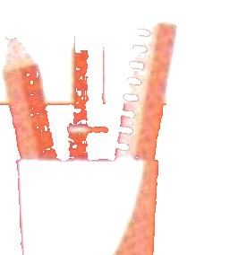
一、听力ListeningАудирование 4-3
第一部分Part IЧасть I
第1—3题： 听短语， 选择正确图片。每题听两次。Questions 1-3: Listen to each phrase and choose the correct picture. Each phrase will be played twice.Задания 1-3: Прослушайте каждую фразу и выберите правильную картинку. Каждая фраза будет проиграна дважды.
sān gè píngguǒ例如： 三个苹果
three applesнапример: три яблока例如：E.g.:Напр.:
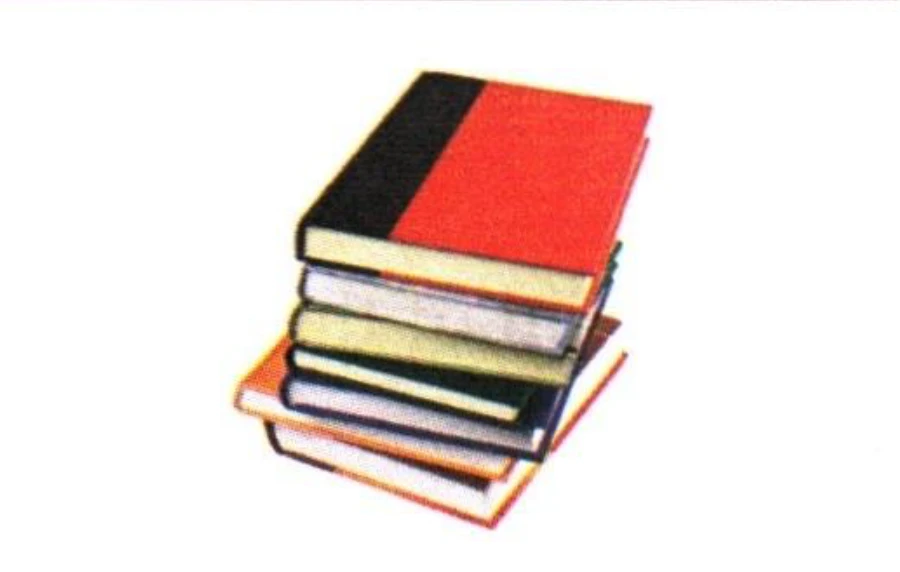
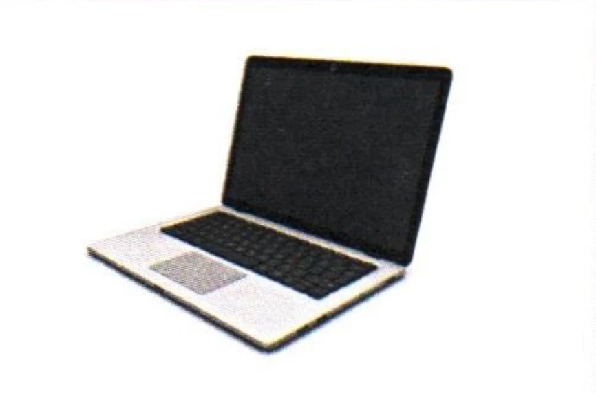
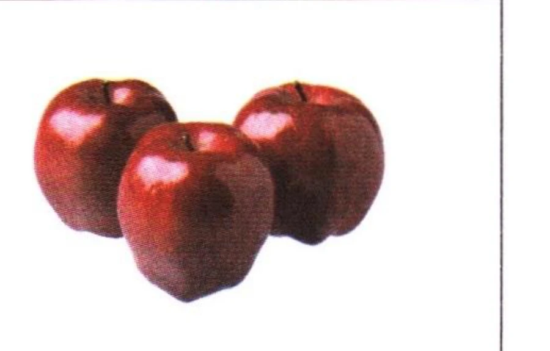
1.
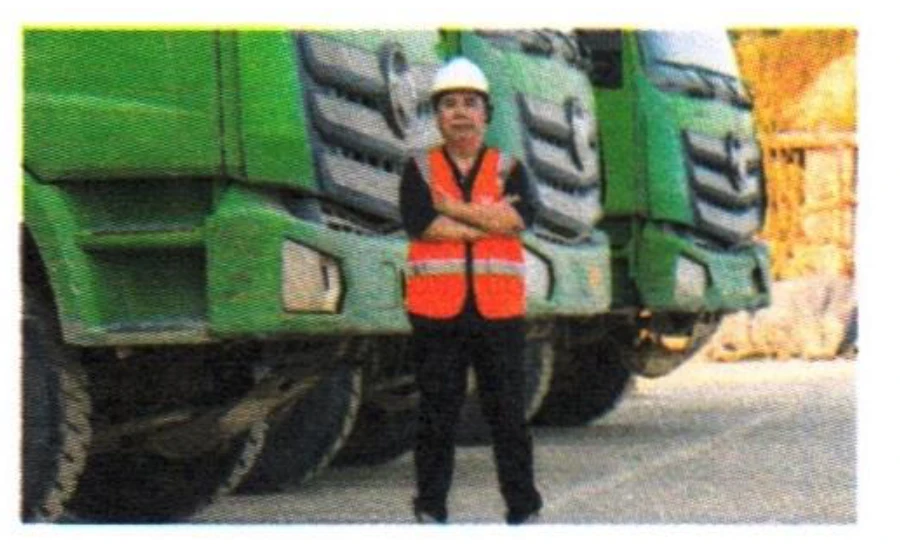
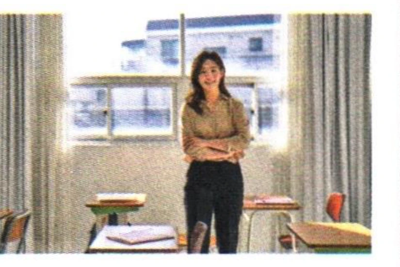
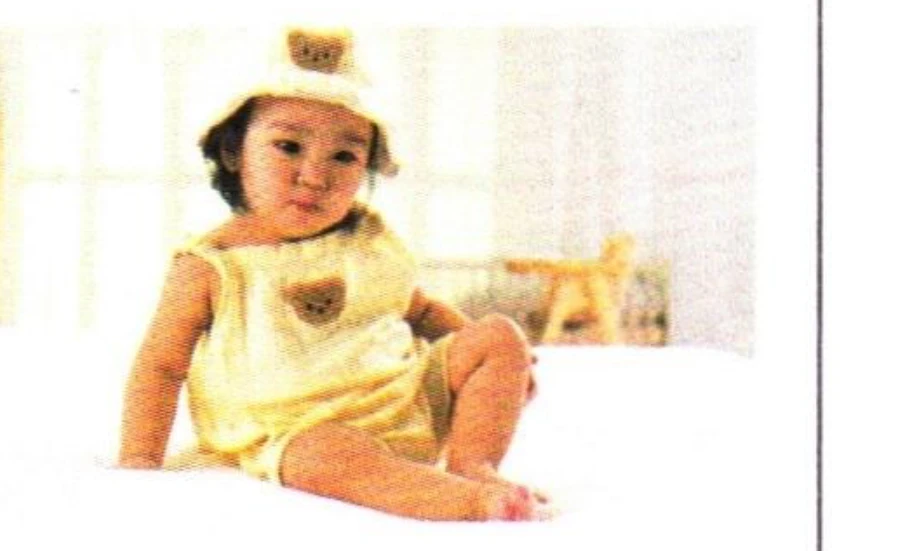
2.
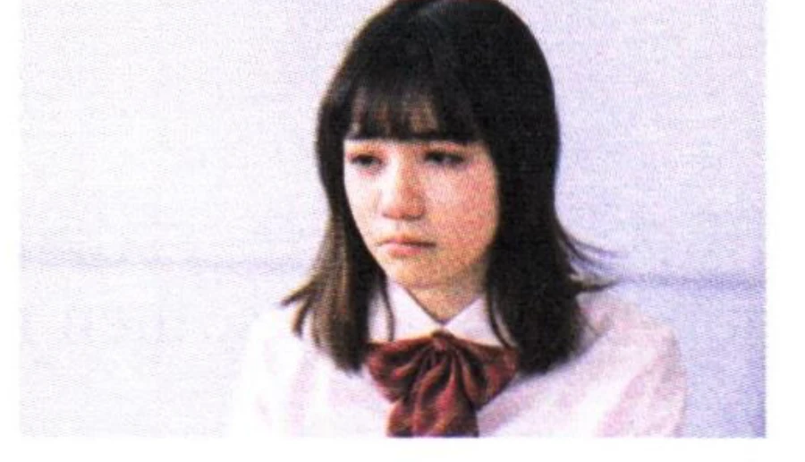
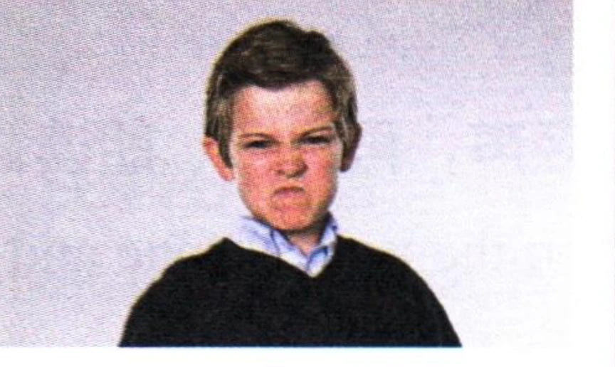
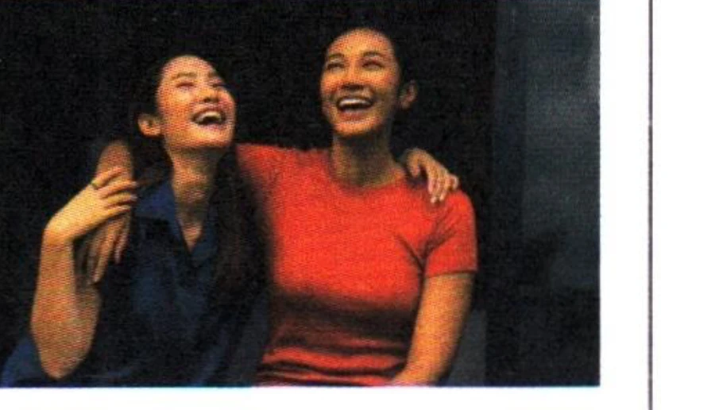
3.
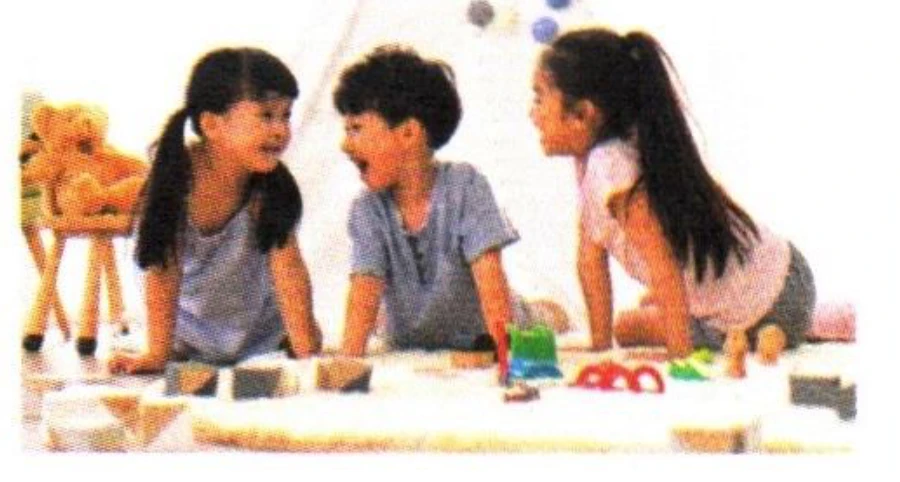
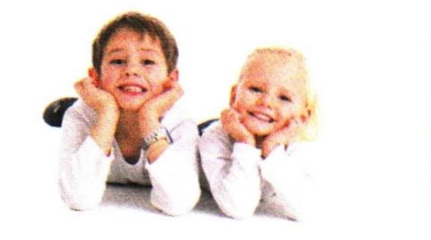
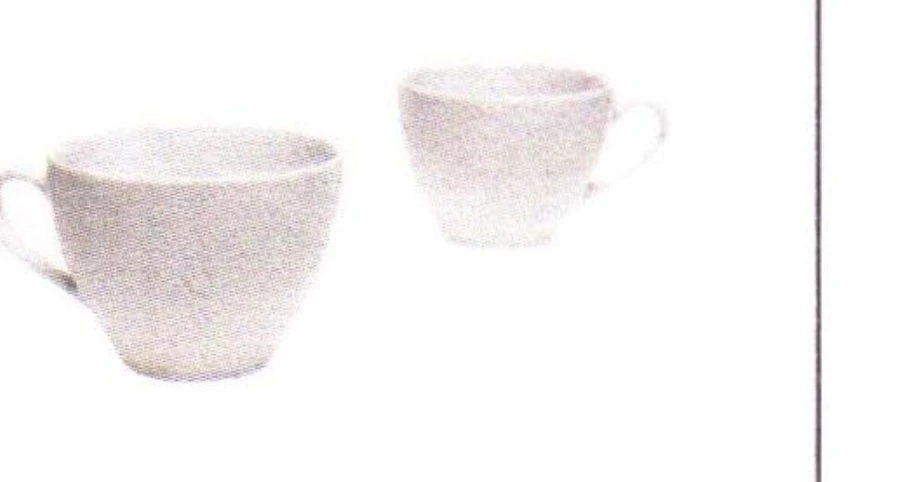